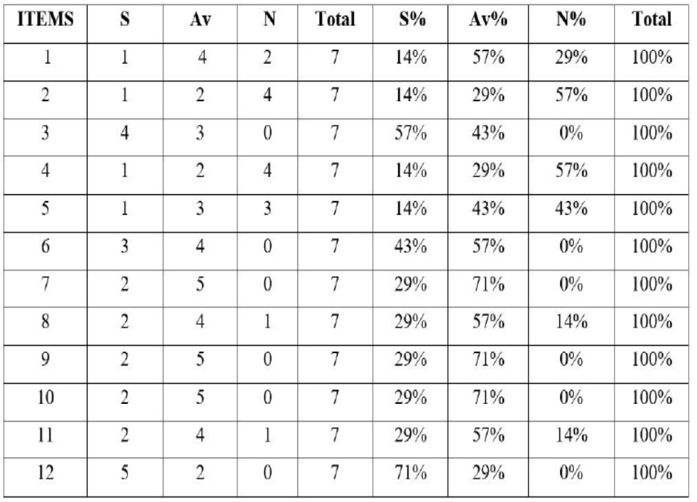
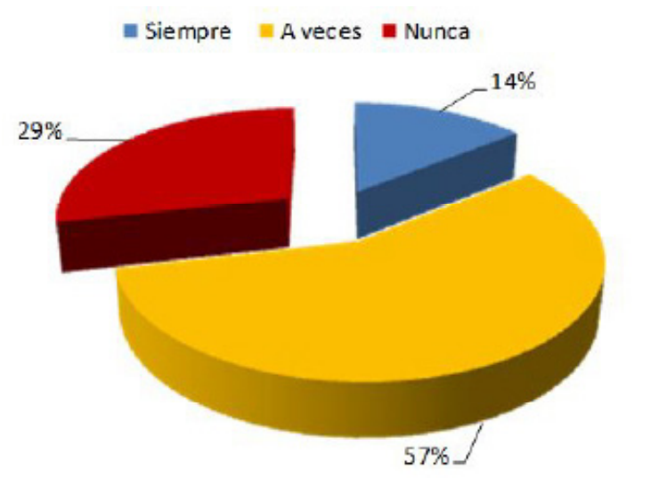
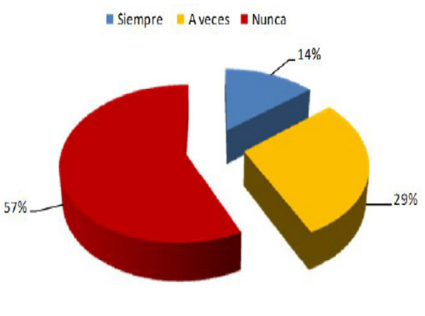
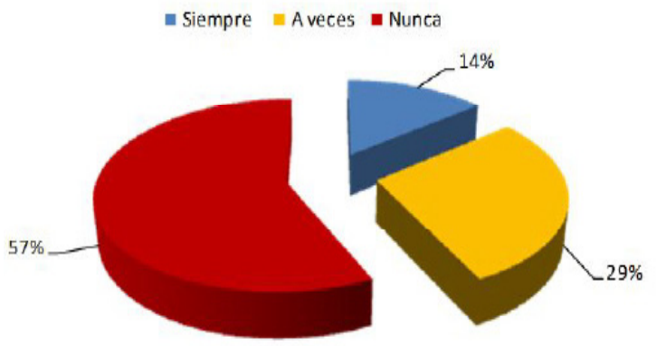
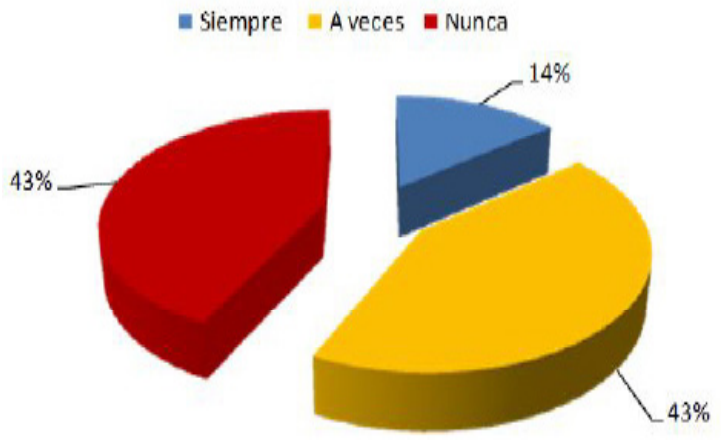
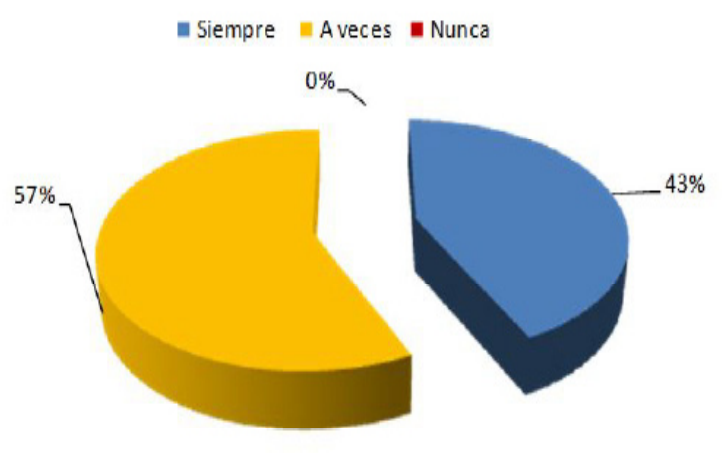
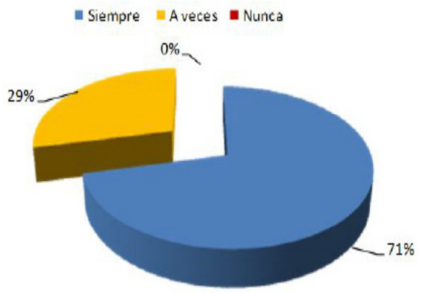

Introducción
La complejidad de los sistemas de
información a nivel mundial, se ha ido
acrecentando en la medida en que las
operaciones, así como los procesos de
la empresa se han vuelto más complejas
o especializadas. En estas circunstancias
aspectos como flexibilidad, adaptabilidad
y rapidez de respuesta han pasado de ser
aspectos deseables, a convertirse en la clave
del éxito en muchas empresas (Arauzo, 2012).
Por su parte, Anthony y Govindarajan (2003)
definen el proceso de control de gestión como
el proceso mediante el cual los directivos
de todos los niveles se aseguran de que las
personas a quienes supervisan implementen
las estrategias formuladas.
Para dar respuesta a estas necesidades de
control se han desarrollado paradigmas de
información que pretenden conjugar de manera
sinérgica todos los elementos individuales del
sistema y sacar el mayor provecho posible
de los recursos con los que se cuenta para
manejar los recursos de las organizaciones.
Atendiendo a lo anterior, es posible afirmar
como expresa Castañeda, L. (2009), que: “La
empresa es un sistema, es decir, un conjunto
de elementos interrelacionados entre sí, que
existen en un entorno” (p. 58). En el caso de
este estudio, una empresa en un contexto del
sector de la salud, por tratarse de un hospital.
Dentro de este sistema, el Control de Gestión
forma parte primordial como medio de
control y cambio, por eso, necesita establecer
o identificar qué medidas adoptar para
alcanzar sus metas o que cambios pertinentes
deben hacerse para acceder a un mejor
nivel de desempeño; respondiendo ciertas
preguntas como: ¿Se cumplen los objetivos
a corto y largo plazo?; ¿Cada cuándo se
prevé en las necesidades financieras con
respecto al proceso administrativo?; ¿Se
aplican adecuadamente los procedimientos?; ¿Es confiable un determinado control? Como
explica Muñiz Daza (2018) y paz (2019)
El Sistema de Gestión se convierte en un
instrumento administrativo creado y apoyado
por la dirección de la empresa que le permite
obtener las informaciones necesarias, fiables
y oportunas para la toma de decisiones
operativas y estratégicas. En otras palabras,
el control de gestión, es el proceso mediante
el cual se mide el aprovechamiento eficaz y
permanente de los recursos disponibles en la
empresa para lograr los objetivos fijados por
la Dirección.
Es esto lo que se conoce como gestión a
nivel empresarial, sin importar el tipo de
empresa, dentro de la cual se cumple con las
actividades básicas de: planificar, organizar,
dirigir y controlar la misma, pero que varían o
se especializan dependiendo del sector de la
economía a la cual pertenece dicha empresa
u organización, en todas ellas se maneja o
se gestiona información. En respuesta a estas
iniciativas, en Latinoamérica se han venido
actualizando los Sistemas de Gestión de la
Información (SGI) de las empresas de salud.
Altuve G., José G (1996).
Precisamente en este sentido, en Colombia
se ha implementado un Sistema de Gestión
de Calidad, bajo la normativa jurídica como
son la Ley 100 de 1993, el decreto 2309 del
2002 y el decreto 1011 del 2006. Este último
establece el Sistema Obligatorio de Garantía de
Calidad de la Atención del Sistema General de
Seguridad Social en Salud (SOGCS), así como
las responsabilidades de quienes participan en
la actividad como son: el Ministerio de Salud,
la Superintendencia Nacional de Salud, los
prestadores de servicios de salud, las entidades
territoriales, entre otros. (Arauzo, 2012).
Ahora bien, la gestión operativa y la
gestión financiera de una empresa son dos
actividades integradas o complementarias, pues es imposible desligar la una de la
otra. Por ejemplo, el Gerente General y el
Gerente Financiero tienen la responsabilidad
de manejar los recursos de la empresa
eficazmente, es decir, administrar en todos los
aspectos inherentes a la organización, como
reducir los costos sin desmejorar la calidad del
producto o servicio, eliminando el desperdicio,
elevando y manteniendo el nivel de las ventas,
maximizando la rentabilidad de la empresa.
Castro (2016).
Sin embargo, muchas organizaciones
relacionadas con el campo de los servicios de
la salud han ejercido actividades de manera
incontrolada evidenciándose la ausencia de
sistemas de gestión que permitan medir y
controlar de manera integral todos aquellos
procesos que garanticen su productividad,
ignorando que existen herramientas
gerenciales que permiten el entendimiento
entre las estrategias y su implantación y control,
como lo es el Cuadro de Mando Integral (CMI)
y las Proyecciones Financieras.
Es por ello que las organizaciones innovadoras
definen nuevas estrategias e implantan
Sistemas de Gestión, lo cual genera un cambio
que va desde un enfoque de medición a través
de indicadores financieros a otro basado en la
medición de logros mediante indicadores no
financieros aunados a los tradicionales. Siendo
evidenciada precisamente esta necesidad en el
ESE Hospital Juan Luís Londoño en el municipio
Zulia-Norte de Santander, particularmente en
su Sistema Integrado de Información Gerencial
(SIG).
Las primeras observaciones de campo de los
autores, revelaron deficiencias en el control de
las áreas operativa y financiera; por lo cual no
ha podido manejar apropiadamente ciertos
inconvenientes que afectan la rentabilidad de
la organización. Uno de estos inconvenientes es
la ausencia de políticas claras y estrictas en los
procesos de facturación y rotación de cartera,
como también el exceso de responsabilidad
en una sola persona para el manejo de
distintas operaciones, ocasionando con ello la
pérdida de tiempo, duplicidad de funciones y
deficiencias en el sistema de control interno.
Anthony, R. & Govindarajan, V. (2008).
Por otra parte, la entidad de salud lleva a
cabo varios proyectos a la vez, por lo que
el Gerente de Proyectos debe cubrir todos
los gastos, manejando un estimado para el
alcance de las metas establecidas en el Plan
de Desarrollo municipal, para el periodo en
curso. Sin embargo no se sabe de manera
concreta cuál es la cantidad de recursos que
está otorgando cada proyecto de manera
individual, y puede suceder que la utilidad de
uno esté compensando las pérdidas de otro.
Asimismo, estos problemas repercuten en
la parte operativa como efectos de la escasa
contratación de personal, o la pérdida de
calidad en los procesos. Arranz, A. (1995).
Las causas de esta situación se encuentran
en que el personal responsable de las áreas
operativa y financiera está formado en ciencias
de la salud y no en estas disciplinas, lo cual
no les ha permitido alcanzar la eficiencia en su
gestión; como también en el desconocimiento
de las distintas técnicas gerenciales que
pueden ser aprovechadas como estrategias
para mejorar el control de muchos de estos
procesos. Lo cual trae como pronóstico en
el mediano y largo plazo que la empresa no
solo pierda tiempo y recursos materiales,
sino también que no alcance su acreditación
durante alguna de las visitas de verificación de
los órganos de control.
Siendo el control del pronóstico o la solución
ofrecida por los autores de esta investigación
generar estrategias para la optimización
operativa y financiera de la ESE Hospital Juan
Luís Londoño, del Zulia, garantizando con
ello el mantenimiento y crecimiento de esta
organización, todo esto enmarcado dentro
del enfoque de Mejoramiento Continuo de
la Calidad (MCC). En este sentido, los autores
de este estudio atienden a los principios
básicos que deben guiar las finanzas son:
uno que las finanzas y las operaciones de una
empresa están completamente conectadas;
entonces, las actividades de una compañía, su
método operativo y su estrategia competitiva
fundamentalmente determinan la estructura
financiera de la misma.
Y dos, lo contrario también es cierto: las
decisiones que parecen de naturaleza
esencialmente financiera pueden afectar
significativamente a la parte operativa de
la compañía. Siendo entonces necesaria la
implementación de herramientas gerenciales
para el establecimiento de una verdadera
planificación y control de las áreas operativa
como financiera. En este caso, se ofrece la
aplicación de técnicas gerenciales como el
Cuadro de Mando Integral y el Manual de
Procedimientos; todos ellos orientados a
garantizar la optimización de los procesos
y buscar la reducción de los costos totales
operativos.
Por consiguiente, el interés de los autores de
esta investigación, es que una vez sea puesta en
marcha la propuesta, los resultados favorezcan
la eficiencia del Sistema de Gestión de la
entidad. Se pretende con esta investigación
suministrar información suficiente que pueda
ser empleada para la organización Operativa
y Financiera de esta empresa a favor de
la calidad, formulando herramientas que
contemplen las metas, las acciones de mejora,
pero sobre todo, afianzando en los miembros
de este hospital una cultura de Mejoramiento
Continuo.
De esta manera, se tendrá un impacto positivo
no solo en los usuarios que acuden a este
centro hospitalario, sino en toda la población
fronteriza en general, al contar con una
institución eficiente. De esta forma los directos
beneficiados no serán solo los usuarios de este
centro de salud, sino también los pobladores
de toda la región, quienes podrán contar con una institución más eficiente que les brinde
seguridad en cuanto a la calidad de la atención
recibida. Es precisamente este enfoque el que
justifica la labor o el rol que cumple el gestor
social dentro de las Políticas Públicas.
Asimismo se atiende a otros estudios o
antecedentes como la investigación de
Fajardo, (2017): “Análisis de la sostenibilidad
financiera del Hospital Teófilo Dávila de la
ciudad de Machala en Ecuador”, como Maestría
en Finanzas y Economía Empresarial, de la
Universidad Católica de Santiago en Guayaquil;
bajo la modalidad de estudio documental,
realizó el análisis longitudinal y transversal
de los Estados Financieros de esta entidad,
confrontándolos con el manejo presupuestal,
para el primer semestre del año 2015.
Los resultados arrojaron la necesidad de
adoptar indicadores de gestión para el control
de los resultados, especialmente en las etapas
de evaluación y seguimiento, los cuales no
suelen ser utilizados en las empresas del sector
de la salud. Por lo cual, resulta un antecedente
valioso para la presente investigación,
teniendo en cuenta que se espera formular
una serie de herramientas como el Manual de
Procedimientos y el Cuadro de Mando Integral,
para el control tanto operativo como financiero
del Sistema de Gestión de la ESE Hospital Juan
Luís Londoño en el municipio Zulia, en Norte
de Santander. Arévalo, J. & Pacheco, M. (2013).
En el ámbito nacional, Pedraza (2020):
“Fortalecimiento del Sistema de Control
Interno en la ESE Hospital Regional del
Magdalena Medio: enfoque COSO”, como
Maestría en Administración de Empresas,
de la Universidad EAN, en Bogotá; expone
en un estudio exploratorio y de campo, así
como análisis de Pareto, para luego definir
las estrategias que permitan optimizar los
recursos, una vez identificadas las brechas,
mediante un Instrumento de Evaluación del Sistema de Control Interno (IESCI), bajo lo
descrito por el modelo COSO (2013).
Los resultados indicaron el incumplimiento de
algunos estándares de la calidad, por lo cual
se dio la necesidad de la implementación de
herramientas de control a nivel administrativo,
financiero y asistencial que le permita optimizar
el uso de los recursos y dar cumplimiento a los
requisitos normativos y las expectativas de los
pacientes en cuanto a la calidad del servicio.
Finalmente, a nivel regional, Martínez &
Delgado, (2017): “Propuesta documental
del Sistema de Control de Calidad en la
ESE Hospital Local de Los Patios- Norte de
Santander, basados en la NTCGP, versión
2009”, como Trabajo de Grado de la carrera
de Ingeniería Industrial de la Universidad
Libre, seccional Cúcuta; bajo un modelo de
investigación descriptiva y de campo, con
enfoque cuantitativo, se tuvieron en cuenta
los parámetros de esta norma como lo son, el
manual de calidad, la secuencia e interacción
de procesos debidamente documentados
y caracterización de procesos entre otros.
Barrios, R. (2017).
En congruencia con las etapas de planificación,
gestión de los recursos, prestación del servicio
de la institución. Por consiguiente, atendiendo
a estas consideraciones se formuló como
objetivo general: Generar estrategias para
la optimización operativa y financiera de
la ESE Hospital Juan Luís Londoño en el
municipio Zulia-Norte de Santander, bajo el
Sistema Obligatorio de Garantía de Calidad
de la Atención en Salud (SOGCS); mientras
que la sistematización arrojó como objetivos
específicos:
(a) Identificar qué aspectos deben optimizarse
dentro de la gestión operativa y financiera
de la ESE Hospital Juan Luís Londoño en
el municipio Zulia-Norte de Santander,
bajo el Sistema Obligatorio de Garantía de
Calidad de la Atención en Salud (SOGCS)
(b)Establecer la disponibilidad técnica, operativa,
institucional, económica y legal que existe en
esta entidad actualmente, para la adopción de
las estrategias de optimización generadas bajo
el Sistema Obligatorio de Garantía de Calidad
de la Atención en Salud (SOGCS) y las normas
ISO 9001 DE 2015.
(c) Y (c) Describir las características del Manual
de Procedimientos y el Cuadro de Mando
Integral como estrategias para la optimización
de la ESE Hospital Juan Luís Londoño en el
municipio Zulia-Norte de Santander, bajo el
Sistema Obligatorio de Garantía de Calidad de
la Atención en Salud (SOGCS) y las normas ISO
9001 DE 2015.
Este proyecto reviste especial importancia
para la Especialización en Gestión Pública
de la Fundación de Estudios Superiores de
Comfanorte (FESC), por ser un tema poco
explorado en el desarrollo de investigaciones
a nivel de Especializaciones y Maestrías,
particularmente, desde el enfoque normativo
de la Gestión de la Calidad en Salud, además
de ser una excelente oportunidad para ejercer
en la práctica como gestores públicos en
beneficio de toda una comunidad.
Materiales y métodos
La presente investigación se asumió como un
estudio descriptivo, ya que: “su objetivo central
es la descripción de fenómenos, utilizando
la observación como técnica fundamental y
especificando las propiedades importantes de
personas, grupos, comunidades… que están
siendo sometidos a análisis” (Bavaresco, 2013).
En este caso, se describen las características
de los procesos llevados a cabo dentro del
Sistema de Gestión de la ESE Hospital Juan Luís
Londoño en el municipio Zulia, en Norte de
Santander, es decir, desde la perspectiva del
personal de la institución de salud. Balestrini
A., M. (2013) Asimismo, se utilizó el
análisis descriptivo para el alcance del segundo y tercer objetivo específico, con el desarrollo de
instrumentos de recolección de información
y la construcción del CMI y el Manual de Procedimientos; llegando así a la generación de las
herramientas y las estrategias coordinadas, efectivas y sostenibles para la optimización del
Sistema de Gestión Operativo y Financiero de esta entidad, los cuales serán presentados a
las directivas de la ESE Hospital Juan Luís Londoño para su respectiva discusión y posterior
aprobación. Consiguiendo el propósito primordial de los investigadores, que es la optimización.
Resultados
Alcance del primer objetivo específico. Se procedió a identificar qué aspectos deben optimizarse
dentro de la gestión operativa y financiera de la ESE Hospital Juan Luís Londoño en el municipio
Zulia-Norte de Santander, bajo el Sistema Obligatorio de Garantía de Calidad de la Atención
en Salud (SOGCS). Para ello se aplicó el cuestionario estructurado de preguntas cerradas (Ver
Anexo A) con el cual se pudieron determinar las características de los procesos llevados a cabo
en el contexto de estudio, como se muestra a continuación.
Cuadro 1. Matriz General de Datos

Fuente: Autores, (2020)
Discusión de los resultados
Con base al análisis anterior de los resultados
obtenidos del diferente ítem propuestos,
se puede identificar ciertas situaciones que
se presentan en algunas preguntas como
indispensables en este anaalisis.
Ítem 1. ¿Se ha mantenido el control operativo
y financiero de la entidad a través de un
Sistema de Gestión Integral?

Gráfico 1. Se ha mantenido un Sistema de Gestión para el control
operativo y financiero
Fuente: Autores, (2020)
El 57% de los encuestados afirma que solo a
veces se han percatado de la existencia de un
Sistema de Gestión para todas y cada una de
las áreas de la entidad; mientras que un 29%
dice que nunca ha existido y el 14% (uno solo
de los funcionarios), afirma que siempre se
ha ejecutado un Sistema de Gestión en la
empresa. Para la autora, se hizo necesaria la
observación directa, utilizando una lista de
cotejo, con lo cual se pudo comprobar que
este sistema como tal no existe, es decir, no
se ha formalizado, solo se ha aplicado como
un proceso independiente para cada área.
Para Ivancevich y otros (2005), la gestión es el
proceso emprendido por una o más personas
para coordinar las actividades laborables de
todo un equipo, con la finalidad de lograr
resultados de alta calidad. Es así como una de las preocupaciones fundamentales de la
administración son los procesos de gestión,
la herramienta más eficaz está dada por un
conjunto de indicadores que permitan saber
en todo momento las condiciones con las
que se desarrollan estos procesos. Siendo
entonces importante verificar que existe, pero
sobre todo que se cumple con los estándares
de calidad de dicho sistema.
Ítem 2. ¿Ha resultado eficaz este sistema de
gestión hasta ahora?

Gráfico 2. Ha resultado eficaz este Sistema de Gestión
Fuente: Autores, (2020)
En este punto, resulta importante caracterizar
los procesos que se llevan a cabo, con los
cuales se espera mantener el control de
la empresa. Por esa razón, el 57% de los
encuestados reconoce que nunca ha sido
eficaz este sistema, frente a un 29% que opina
que en ocasiones es útil y otro 14% que dice
que siempre lo ha sido. Para los autores, el
sistema de gestión comprende determinadas
funciones ejecutadas por los niveles para
asignar los recursos, coordinar el trabajo y los
rendimientos de otros empleados (ajenos a la
función de gestión).
Todo esto con la intención de satisfacer las
necesidades de sus clientes, en este caso los
usuarios de la ESE Hospital Juan Luís Londoño
en el municipio Zulia-Norte de Santander,
de forma que se alcancen los objetivos con
altos niveles de calidad, lo que implica eficacia y eficiencia. Según Muñiz (2003), las
herramientas de análisis sólo tienen sentido
si permiten desembocar en una acción. En
caso contrario, representan un mal uso del
tiempo, competencias y de dinero, lo cual no
significa que las herramientas de análisis sean
los instrumentos de acción.
Ítem 4. ¿Han sido identificadas estas fallas de
manera oportuna?

Gráfico 4. Han sido identificadas estas fallas oportunamente
Fuente: Autores, (2020)
Como es entendible, si no se tiene un Sistema
de Gestión eficaz, es muy probable que se
den fallas en los procesos y que los resultados
no sean los esperados. El problema mayor
es que no se puedan identificar estas fallas,
simplemente porque no existe este sistema.
Como lo indica el 57% de los encuestados, al
decir que nunca se han podido identificar las
fallas de manera oportuna, frente a un 29%
que afirma que a veces se ha logrado y un
14% renuente en que nunca se ha hecho. En
este sentido, los autores llevaron a cabo una
revisión documental extensa que le permitiese
fundamentar la importancia del Sistema de
Gestión, con trabajos como el de Anthony y
Govindarajan (2007), Simons (1995).
Estos marcos han sido utilizados en trabajos
de campo en el estudio de los sistemas de
control de gestión; las conclusiones de estas
investigaciones arrojaron que los factores clave
de éxito deben ser identificados y controlados
con medidas de desempeño financieras y no
financieras; por consiguiente, en las relaciones
inherentes entre sistemas de control de gestión y desempeño organizacional, el punto de
partida y punto común de cualquier relación
es la estrategia, siendo utilizados como
fundamento para la elaboración del Manual de
Procedimientos y el Cuadro de Mando Integral
(CMI).
Ítem 5.
¿Han sido evaluadas las posibles
causas de estas fallas para su corrección?

Gráfico 5. Han sido evaluadas y corregidas estas fallas
Fuente: Autores, (2020)
En coherencia con la pregunta y la respuesta
anterior, si las fallas no son identificadas
oportunamente, es muy probable que
tampoco puedan ser evaluadas y mucho
menos, corregidas. Aunque las opiniones estén
repartidas en un 43% que opina que nunca y
a veces lo han hecho y el restante 14% que se
mantiene en su posición de decir que siempre
se han identificado y por ende, corregido
dichas fallas. En este punto, es necesario
acotar que lo primero a considerar en cuanto
a los procesos que se llevan a cabo en la ESE
Hospital Juan Luís Londoño en el municipio
Zulia-Norte de Santander, es la normativa
legal.
Seguidamente, pero no menos importante,
el contexto del enfoque de Mejoramiento
Continuo que ha impartido la entidad entre
su personal, es decir, que si bien se busca
el control del área operativa y financiera,
debe enfocarse en un aspecto central, como
lo es la calidad; en este sentido, todos los
procedimientos en gestión de la calidad deben ser cuidadosamente planificados. En
este caso, existen herramientas gerenciales
que ayudan a identificar las fallas, evaluarlas y
por ende corregirlas a tiempo, como la Matriz
DOFA, el Análisis Situacional, las Matrices
POAM, PCI, los árboles de decisión, el árbol
del Problema, la Espina de Pescado, la Matriz
del Marco Lógico, entre otras.
Ítem 6.
¿Podría decirse que estas fallas o
errores son de carácter humano?

Gráfico 6. Las fallas encontradas han sido humanas
Fuente: Autores, (2020)
El 57% considera que las fallas en los procesos
tanto operativos como financieros son la
mayoría de las veces por culpa de las personas,
es decir, de quien realiza la operación,
mientras que otro 43% piensa que siempre es
su responsabilidad. En este punto, los autores
consideraron las observaciones de campo
realizadas dentro de la empresa, así como la
verificación de los procesos, encontrando que
la empresa no realiza ningún tipo de control
financiero. Es decir, el Sistema de Gestión está
basado en una serie de procesos separados
enfocados en su mayoría en las funciones
administrativas y contables.
Sin embargo, las personas que los manejan no
tienen la formación suficiente para llevar a cabo
un manejo financiero estratégico, es decir, no
se utilizan herramientas financieras como los
indicadores estratégicos son: el porcentaje de participación, el incremento de ventas, el
ROI, midiendo el rendimiento de la inversión;
el EBITDA, evaluando ingresos antes de los
gastos financieros; intereses, impuestos,
depreciación y amortización. (Marulanda et
al 2019)
Ítem 12.
¿Cree usted que sea conveniente
formular herramientas financieras para
la optimización del Sistema de Gestión
Operativo y Financiero actual?

Gráfico 12. Considera conveniente la formulación de herramientas y estrategias financieras
Fuente: Autores, (2020)
El 71% de los encuestados afirma que
siempre será conveniente contar con un
Sistema de Gestión Integral, es decir, que
contemple tanto los procesos operativos
como los financieros para el control de la
empresa; en tanto que un 29% se muestra
indeciso, porque dice que a veces no es
suficiente este sistema para que se alcancen
los resultados esperados. En este punto, la
autora coincide con la mayoría al encontrar
que el hospital debe garantizar la calidad de
sus operaciones constantemente, por lo cual
debe mantener un control no solo eficaz,
sino flexible, que contemple las condiciones
del Sistema Obligatorio de la Garantía de la
Calidad en Salud (SOGCS).
Atendiendo a estas observaciones como a las
respuestas emitidas por el personal del Área
Operativa y Financiera de la ESE Hospital Juan
Luís Londoño en el municipio Zulia-Norte
de Santander, se procedió a la elaboración
del Manual de Procedimientos (ver Anexo B)
para la caracterización de los procesos para el
Mejoramiento Continuo de la Calidad en este
institución.
Conclusiones y discusiones
Como se pudo observar en las fases de ejecución
del capítulo de los Resultados, los autores de
esta investigación le dieron alcance a cada
uno de los objetivos propuestos, comenzando
con la caracterización de los procesos y/o
procedimientos para el control de la gestión
operativa y financiera de la de la ESE Hospital
Juan Luís Londoño en el municipio Zulia-Norte
de Santander, bajo el Sistema Obligatorio de
Garantía de Calidad de la Atención en Salud
(SOGCS); mediante la aplicación de la encuesta
al personal de la entidad, reconociendo no solo
las oportunidades de mejora, sino también los
responsables de cada uno de estos procesos,
los cuales fueron posteriormente incluidos en
el Manual de Procedimientos.
Asimismo, se detallaron los objetivos y los
indicadores que deben implementarse para
el Mejoramiento Continuo de la Calidad en
esta entidad de salud, como parte del proceso
de acreditación, estando así actualizados y
preparados para el momento en que llegue la
visita de verificación de los entes de control
con la aplicación de las Auditorías Externas;
siendo el interés de los autores de esta
investigación, que una vez sean aceptadas las
recomendaciones, los resultados favorezcan la
articulación de los cuatro componentes.
En segundo lugar, se definió la
factibilidad operativa, económica y técnica
requerida para la optimización del Sistema
de Gestión Operativo y Financiero actual bajo el Sistema Obligatorio de Garantía de
Calidad de la Atención en Salud (SOGCS) y las
normas ISO 9001 DE 2015, presentando como
se pudo observar en el capítulo anterior, los
requerimientos y las disposiciones tanto legales
como operativas, institucionales, económicas
y tecnológicas requeridas para la puesta en
marcha del Cuadro de Mando Integral (CMI)
y la adopción del Manual de Procedimientos
propuesto. (Ver Anexo B).
Finalmente, se acoplaron los requerimientos
del Sistema de Gestión dentro del Manual
de Procedimientos y el Cuadro de Mando
Integral para que se optimice todo el proceso
de Gestión Operativa y Financiera de la ESE
Hospital Juan Luís Londoño en el municipio
Zulia-Norte de Santander, bajo el Sistema
Obligatorio de Garantía de Calidad de la
Atención en Salud (SOGCS) y las normas ISO
9001 DE 2015; lo cual se llevó a cabo con la
colaboración del personal de la ESE Hospital
Juan Luís Londoño, quienes proporcionaron a
los investigadores la información pertinente y
suficiente para llevar a cabo su labor.
Por otra parte, la revisión de documentos y
literatura sobre el tema, facilitó la adaptación
de dicha caracterización al Manual de
Procedimientos como al CMI, teniendo
presente que el Sistema Obligatorio de
Garantía de Calidad en Salud (SOGCS) está
constituido por cuatro componentes: 1.
Habilitación de Prestadores y de Entidades
Administradoras de planes de Beneficios, 2.
Acreditación Institucional, 3. Auditoría para
el Mejoramiento de la Calidad 4. Información
a Usuarios, ahora denominada Sistema de
Información para la Calidad.
Cada componente tiene características y
objetivos propios, diferentes de los demás,
y hace parte de un conjunto de acciones
sistemáticas dirigidas a estimular todo aquello
que facilite la obtención de los mayores
beneficios posibles para los usuarios y les evite oportunamente riesgos innecesarios durante
el proceso de atención. De esta manera, los
procesos de atención en salud deben estar
coordinados y autoevaluados en forma
permanente por el equipo asistencial en las
instituciones prestadoras de servicios y por los
entes de vigilancia y control del Estado.
Todo esto en el marco del cumplimiento del
sistema de garantía de calidad de los servicios
de salud; cumpliéndose así que el prestador de
servicios de salud que habilite un servicio es el
responsable del cumplimiento y mantenimiento
de todos los estándares y criterios aplicables a
ese servicio, contando con un equipo humano
de carácter multidisciplinario para evaluación
de las actividades.
Referencias
- Altuve G., José G (1996): Finanzas, teoría y práctica.
Ediciones del Consejo de Publicaciones de la
U.L.A. 2da Impresión.
- Arauzo M (2012)Finanzas, teoría y práctica.
Ediciones del Consejo de Publicaciones de la
U.L.A. 2da Impresión.
- Anthony, R. (2003). Sistema de Control de Gestión.
Décima Edición. Editorial McGrawHill.
- Anthnoy, R; Govindarajan. (2007) Sistemas de
control de gestión. Duodécima edición. Mc
Graw Hill. México.
- Anthony, R. & Govindarajan, V. (2008). Sistemas
de control de gestión. Duodécima edición. Mac
Graw Hill
- Arranz, A. (1995). Planeación estratégica integral.
México: instituto internacional de capacitación
y estudios empresariales, S.C.
- Arévalo, J. & Pacheco, M. (2013). Caracterización
de la actividad económica empresarial
de la ciudad de Ocaña. I+D Revista de Investigaciones, 2(2), 6-19.
- Balestrini A., M. (2013) Cómo se elabora el
proyecto de investigación (7a. e.). Caracas,
Venezuela: Consultores Asociados.
- Barrios, R. (2017). “Análisis y Rediseño del Modelo
de Gestión Financiera. Estudio de Caso:
Universidad de los Llanos”, Trabajo de Grado
Publicado como Maestría en Administración,
Universidad Nacional de Colombia, sede
Manizales.
- Bavaresco, A. (2013) Proceso metodológico en
la investigación (Cómo hacer un Diseño de
Investigación). Maracaibo, Venezuela: Editorial
de la Universidad del Zulia.
- Castañeda, L. (2009), Planeación estratégica y
control de gestión su interacción. México:
ECASA.
- Castro Alfaro, A. (2016). Estrategias para la
disminución de la carga impositiva en las
organizaciones empresariales. Enfoque
Disciplinario, 1(1), 21-34. Recuperado a partir
de http://enfoquedisciplinario.org/revista/index.php/enfoque/article/view/6
- Daza Corredor, A., Viloria Escobar, J., & Miranda
Terraza, L. (2018). De la responsabilidad
social empresarial (RSE) a la creación de valor
compartido (CVC): una reflexión crítica sobre
los dos conceptos. Aglala, 9(1), 263-285. http://revistas.curnvirtual.edu.co/index.php/aglala/article/view/1193
- Ivancevich, Domínguez Machuca, J.A., Álvarez
Gil, M.J., Domínguez Machuca, M.A.,
García González, S., Ruiz Jiménez, A. (1995)
‘‘Dirección de Operaciones. Aspectos tácticos
y operativos en la producción y los servicios’’.
Editorial McGraw-Hill.
- Fajardo, (2017). “Análisis de la sostenibilidad
financiera del Hospital Teófilo Dávila de la
ciudad de Machala en Ecuador”, Trabajo de
Grado Publicado como Maestría en Finanzas
y Economía Empresarial, de la Universidad
Católica de Santiago en Guayaquil, Ecuador.
- Marulanda Ascanio, C., Barrientos Monsalve,
E. J., Sánchez Mojica, K. Y., Velázquez
Carrascal, B. L., & Ceballos Leyva, N. (2019).
Evaluación financiera para la implementación
de la semimecanización del sistema de
transporte interno de la mina Shipio, 2017.
Respuestas, 23(S1), 119–126. https://doi.org/10.22463/0122820X.1613
- Martínez & Delgado, (2017). “Propuesta
documental del Sistema de Control de Calidad
en la ESE Hospital Local de Los Patios- Norte
de Santander, basados en la NTCGP, versión
2009”, Trabajo de Grado Publicado. Universidad
Libre, seccional Cúcuta, Colombia.
- Muñiz, L., “Cómo implantar un sistema de control
de gestión en la práctica”, GESTIÓN 2000,
2003.
- Pedraza (2020). “Fortalecimiento del Sistema de
Control Interno en la ESE Hospital Regional
del Magdalena Medio: enfoque COSO”,
Trabajo de Grado Publicado como Maestría en
Administración de Empresas, de la Universidad
EAN, Bogotá, Colombia.
- Muralla, H. (2015). Revisitando estrategias de
sostenibilidad de las empresas a través de una
visión sistémica empresarial. I+D Revista de
Investigaciones, 5(1), 23-42.
- Paz Marcano, A., Castro, A. y Pinto, E. (2019).
Responsabilidad social interna como
estrategia de calidad de vida en empresas
petroquímicas de Venezuela. En Paz, A. y
Paz, U. Organizaciones vinculantes. Nuevos
desafíos en la gerencia global (Vol. 1, p. 1). Colombia: Pragmática Editores https://www.researchgate.net/publication/350567636_Responsabilidad_social_interna_como_estrategia_de_calidad
- Simons, R; Dávila, A. (2003) ¿Qué nivel tiene la
rentabilidad de su gestión? Harvard Business
Review. Ed. Deusto. Barcelona.